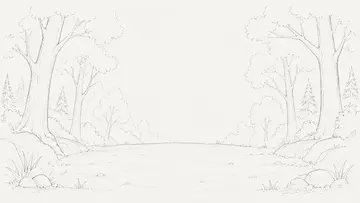

Nature Seed Bir yol çizin. Onları bir araya getirin.
Tarayıcınızda oynayabileceğiniz, ücretsiz, çizerek çözülen bir fizik bulmacası. Sınırlı mürekkeple bir çizgi çizin; çizgi, Water Drop'u Seed'e taşıyan bir rampa, köprü ya da yakalama noktasına dönüşür. Çözülen her seviye suluboya bir orman sahnesini yeniden canlandırır.
18 Eylül 2026'da 100 seviye, çizgi verimliliği yıldızları ve kayıtlı ilerlemeyle çıktı. itch.io, Game Jolt ve indiexpo üzerinde ücretsiz; iOS ve Android sürümü hedef ve henüz uygulama mağazalarında değil.
Çizsınırlı mürekkeple çizin
BağlanWater Drop'i Seed'e getirin
Çiçek Açormanı geri getirin
Mevcut yapının içinde
Çizdiğiniz şey seviyenin parçası olur.
Onayladığınız her çizgi, gerçek çarpışmaları olan katı bir nesneye dönüşür ve Water Drop ile Seed ona tepki verir. Mürekkep ve çizgi sayısı sınırlı olduğundan çizginin şekli önemlidir.
Yayın durumu 18 Eylül 2026'da yayınlandı

Oyuna genel bakış
İki küçük karakteri bir araya getirmeyi anlatan, rahatlatıcı, çizerek çözülen bir bulmaca.
Fikir
Bir yol çizin, Water Drop ile Seed'i bir araya getirin ve sessiz eskizin yeniden canlanışını izleyin.
Yapıyı başlat
Dokunarak çizimli 100 oynanabilir seviye, çizgi verimliliği için yıldızlar ve oturumlar arasında kaydedilen ilerleme.
Hedef kitle
Sakin bulmacaları, hafif fiziği, doğa temalarını ve stressiz mobil oturumları sevenler için.
Durum
18 Eylül 2026'da çıktı ve tarayıcınızda ücretsiz oynanıyor. Hedef bir mobil sürüm; henüz uygulama mağazalarında değil.
Özellikler
Nature Seed'de neler yaparsınız.
Çizerek çözmeye yönelik fiziksel yollar
Her bulmaca arazi, Seed ve Water Drop ile başlar. Oyuncunun çizgisi, onları birleştiren rampa, köprü ya da yakalama noktası olur.
Net fizik geri bildirimi
Water Drop ve Seed takip edebileceğiniz şekilde hareket eder, böylece başarısız bir deneme neyi değiştireceğinizi gösterir.
Orman restorasyon ödülleri
Bir seviyeyi bitirin; eskizle çizilmiş sahne renklerle ve büyüyen ağaçlarla dolsun.
Kısa seviyeler, dokunarak çizim
Seviyeler kısadır ve dokunarak çizersiniz; bu da telefonda kısa oturumlara uygundur.
Oyun döngüsü
Nature Seed nasıl oynanır
- Adım 01Taslağı okuyun
Eğimlere, boşluklara ve engellere, bir de iki karakteri birbirine bağlamanın en güvenli yoluna bakın.
- Adım 02Çizgiyi çizin
Çizginizi çizin. Fırça darbesi karakterler için bir rampa, kılavuz ya da yakalama noktası olur.
- Adım 03Onayla ve gözlemle
Çizgiyi onaylayın ve karakterlerin tepkisini izleyin. Neyin işe yaradığını, neyin yaramadığını görebilirsiniz.
- Adım 04Çiçek aç veya rafine et
Water Drop, Seed'e ulaşırsa orman geri döner. Iskalarlarsa az önce öğrendiklerinizle yeniden çizin.
Hikaye / dünya
Eskizle çizilmiş bir orman suyu bekliyor.
Nature Seed, nesneleri birbirine itmek yerine kırılgan bir şeyi yeniden canlandırmakla ilgili, çizerek çözülen bir fizik bulmacası olarak başladı.
Kadroda Seed, Water Drop ve siz oynadıkça eskizden renge dönen bir orman var. Her bulmaca küçük bir iş: araziyi inceleyin, bir yol çizin ve suyun büyüyebilecek bir şeye ulaşmasına yardım edin.
- Tasarım yönü
- Sakin fizik ve görünür restorasyon
- Karakterler
- Water Drop ve Seed
- Etkileşim
- Dokunarak çizim
- Ustalık ödülü
- Tek satırlık çözüm üç yıldız kazandırır
Bir bakışta
Bugün tarayıcıda ücretsiz, hedef mobil.
Sınırlı mürekkebiniz ve sınırlı sayıda çizginiz var. Bunlarla Water Drop'u Seed'e ulaştırın, sonra seviyeyi yeniden oynayıp çözümünüzü üç yıldız için tek bir çizgiye indirin.
- Tür
- Çizerek çözülen fizik bulmacası
- Platform hedefi
- iOS / Android
- Oturum şekli
- Kısa sakin seviyeler
Materyalleri indirin
Nature Seed basın ve yaratıcı materyalleri
Basın haberleri, yayıncı incelemesi ve mağaza sayfası referansları için WebP önizlemeleri. Tam çözünürlüklü kaynak dosyalar talep üzerine sağlanır.
Marka ve karakterler
 Water DropSeed'e ulaşması gereken mavi karakter.
Water DropSeed'e ulaşması gereken mavi karakter.
 Seed karakteriWater Drop'un ulaşmaya çalıştığı yeşil karakter.
Seed karakteriWater Drop'un ulaşmaya çalıştığı yeşil karakter.
 Ağaç büyümesiÇözümden sonra büyüyen ağaç.
Ağaç büyümesiÇözümden sonra büyüyen ağaç.
 Orman menüsüAna menü arka planı.
Orman menüsüAna menü arka planı.
 Oyun arka planıBoş oyun alanına sahip seviye arka planı.
Oyun arka planıBoş oyun alanına sahip seviye arka planı.
Çizerek çözebileceğiniz eskiz seviyeleri
 Eskiz seviyesi 01Çözümden önceki eskiz.
Eskiz seviyesi 01Çözümden önceki eskiz.
 Eskiz seviyesi 02Çözümden önceki eskiz.
Eskiz seviyesi 02Çözümden önceki eskiz.
 Eskiz seviyesi 03Çözümden önceki eskiz.
Eskiz seviyesi 03Çözümden önceki eskiz.
 Eskiz seviyesi 04Çözümden önceki eskiz.
Eskiz seviyesi 04Çözümden önceki eskiz.
 Eskiz seviyesi 05Çözümden önceki eskiz.
Eskiz seviyesi 05Çözümden önceki eskiz.
 Eskiz seviyesi 06Çözümden önceki eskiz.
Eskiz seviyesi 06Çözümden önceki eskiz.
 Eskiz seviyesi 07Çözümden önceki eskiz.
Eskiz seviyesi 07Çözümden önceki eskiz.
 Eskiz seviyesi 08Çözümden önceki eskiz.
Eskiz seviyesi 08Çözümden önceki eskiz.


Eskiz seviyesi 09Çözümden önceki eskiz. Eskiz seviyesi 10Çözümden önceki eskiz.
Eskiz seviyesi 10Çözümden önceki eskiz.
Yeniden canlandırılan bulmaca sahneleri
 Seviye 01 yeniden canlandırıldıÇözümden sonra geri yüklendi.
Seviye 01 yeniden canlandırıldıÇözümden sonra geri yüklendi.
 Seviye 02 yeniden canlandırıldıÇözümden sonra geri yüklendi.
Seviye 02 yeniden canlandırıldıÇözümden sonra geri yüklendi.
 Seviye 03 yeniden canlandırıldıÇözümden sonra geri yüklendi.
Seviye 03 yeniden canlandırıldıÇözümden sonra geri yüklendi.
 Seviye 04 yeniden canlandırıldıÇözümden sonra geri yüklendi.
Seviye 04 yeniden canlandırıldıÇözümden sonra geri yüklendi.
 Seviye 05 yeniden canlandırıldıÇözümden sonra geri yüklendi.
Seviye 05 yeniden canlandırıldıÇözümden sonra geri yüklendi.
 Seviye 06 yeniden canlandırıldıÇözümden sonra geri yüklendi.
Seviye 06 yeniden canlandırıldıÇözümden sonra geri yüklendi.
 Seviye 07 yeniden canlandırıldıÇözümden sonra geri yüklendi.
Seviye 07 yeniden canlandırıldıÇözümden sonra geri yüklendi.
 Seviye 08 yeniden canlandırıldıÇözümden sonra geri yüklendi.
Seviye 08 yeniden canlandırıldıÇözümden sonra geri yüklendi.
 Seviye 09 yeniden canlandırıldıÇözümden sonra geri yüklendi.
Seviye 09 yeniden canlandırıldıÇözümden sonra geri yüklendi.
 Seviye 10 yeniden canlandırıldıÇözümden sonra geri yüklendi.
Seviye 10 yeniden canlandırıldıÇözümden sonra geri yüklendi.
Geliştirme zaman çizelgesi
Nature Seed geliştirme zaman çizelgesi
- Yaz 2025Orijinal konsept
Nature Seed, bağ ve doğayı yenilemekle ilgili sakin bir mobil bulmaca fikri olarak doğdu.
- Ekim 2025Seed ve Water Drop kimliği
Tasarım belgesini tamamladık ve ana karakterler olarak Seed ile Water Drop'ta karar kıldık.
- Aralık 2025Geliştirme başlıyor
İlk seviyeleri kâğıt üzerinde planladık, sonra inşa etmeye başladık ve çekirdek sistemler oynanabilir hâle geldi.
- Şubat 2026Taslak seviyelerde büyük çalışma
Seviyeler üzerinde yapılan büyük ve kaba bir geçiş, sonraki cilalama ve dengeleme için bize bir temel verdi.
- Mart-Nisan 2026Mekanik ve seviye incelemesi
Ek mekanikleri ve taslak seviyeleri gözden geçirdik, ardından oyunu sakin tutmak için basitleştirdik ya da yeniden işledik.
- Temmuz 2026Dikey prototip çalışması
Temmuz yapısı sınırlı mürekkepli çizimi, verimlilik yıldızlarını, kayıtlı ilerlemeyi ve kararlı çizgi üretimini tek bir oynanabilir döngüde topladı.
- 18 Eylül 2026Nature Seed yayını
Oyun, 100 seviye, çizgi verimliliği yıldızları, kayıtlı ilerleme ve suluboya restorasyon sahneleriyle Nature Seed olarak çıktı.
Nature Seed SSS
Nature Seed hakkında sık sorulan sorular
Nature Seed ücretsiz mi?
Evet. itch.io, Game Jolt ve indiexpo üzerinde tarayıcınızda ücretsiz oynayabilirsiniz.
Nature Seed çıktı mı?
Evet. 18 Eylül 2026'da 100 seviyeyle çıktı. iOS ve Android sürümü hedef platform ve henüz uygulama mağazalarında değil.
Nature Seed nasıl bir oyun?
Rahatlatıcı, çizerek çözülen bir fizik bulmacası. Çizdiğiniz çizgiler, Water Drop ile Seed'in buluşmasına yardım eden katı nesnelere dönüşür.
Nature Seed nasıl oynanır?
Araziyi okuyun, sınırlı mürekkebinizle bir rota çizin, sonra iki karakterin tepkisini izleyin. Iskalarlarsa yeniden çizin. Daha az çizgi daha çok yıldız kazandırır, tek çizgi ise üç yıldız.
Nature Seed'i kim yapıyor?
WillowinWorlds, mobil bulmaca ve arcade oyunları yapan bağımsız bir stüdyo.
Nature Seed basın materyallerini kullanabilir miyim?
Evet, basın, yayıncı incelemesi ve mağaza referansları için. Kaynak dosyalar, bizden istemediğiniz sürece gizli kalır.
Nature Seed Devlog
Ne değişti ve ne zaman
- Nature Seed yayını
Nature Seed, nihai adıyla itch.io, Game Jolt ve indiexpo üzerinde ücretsiz bir tarayıcı oyunu olarak çıktı; 100 seviye, çizgi verimliliği yıldızları ve kayıtlı ilerleme sunuyor.
- 2. Seviye restorasyon ve stabilite geçişi
Seviye 2 artık daha güvenilir seviye kurulumu, çarpışma kontrolleri ve tamamlama geri bildirimi ile üretim arka plan çiftini kullanıyor.
- Temmuz 2026Oynanabilir yapı
Temmuz yapısı, sınırlı mürekkepli çizgi çizimini, verimlilik yıldızlarını, kayıtlı ilerlemeyi ve restorasyon geri bildirimini bir araya getirdi.
- Nisan 2026Seviyelerin yeniden işlenmesi
Dahili bir incelemeden sonra, karmaşıklığı azaltmak ve telefonda okunmalarını kolaylaştırmak için birkaç taslak seviyeyi yeniden işledik.
- Mart 2026Mekanik incelemesi
Ek mekanikleri test ettik ve seviyeleri kalabalık hissettirenleri kaldırdık.
- Şubat 2026Taslak seviyelerde büyük çalışma
Seviyeler üzerinde yapılan büyük ve kaba bir geçiş, sonraki cilalama ve dengeleme için temel oldu.
- Aralık 2025Geliştirme başlıyor
Çekirdek sistemler tasarım belgesinden oynanabilir hâle geçti.
- Yaz 2025Orijinal konsept
Nature Seed'in ilk sürümü, bağ ve doğayı yenilemekle ilgili sakin bir bulmaca fikriydi.